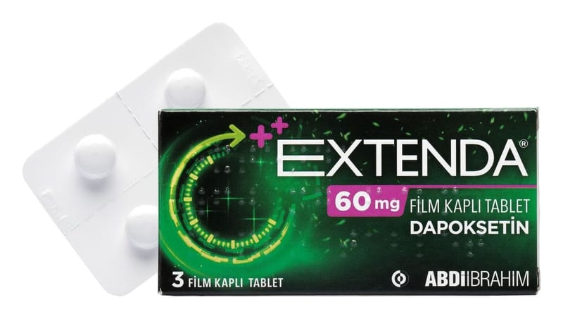

Extenda 60 mg Film Kaplı Tablet ,3 Adet

Ne için kullanılır
KT · Bölüm 1• EXTENDA’nın 60 mg’lık tabletleri gri renkte, yuvarlak, bikonveks film kaplı tabletlerdir. • EXTENDA, 18-64 yaşları arasındaki yetişkin erkeklerde eşleriyle cinsel ilişkisini etkileyecek şekilde sık görülen erken boşalma (prematür ejakülasyon) durumunun tedavisinde kullanılan bir ilaçtır. • EXTENDA etkin madde olarak dapoksetin içerir. Bu seçici serotonin geri alım inhibitörü (SSRI) olarak adlandırılan ve diğer ürolojik ilaçlar olarak adlandırılan gruba dahil bir ilaçtır. • EXTENDA sizin boşalmanıza kadar geçen süreyi uzatır; boşalmayı kontrol edebilmenizi sağlar. Bu sizin hızlı boşalmanızdan dolayı olan hayal kırıklığı ve sıkıntılarınızı azaltır.